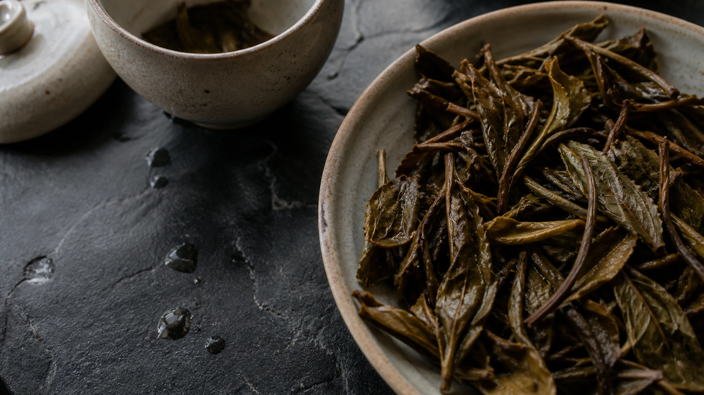
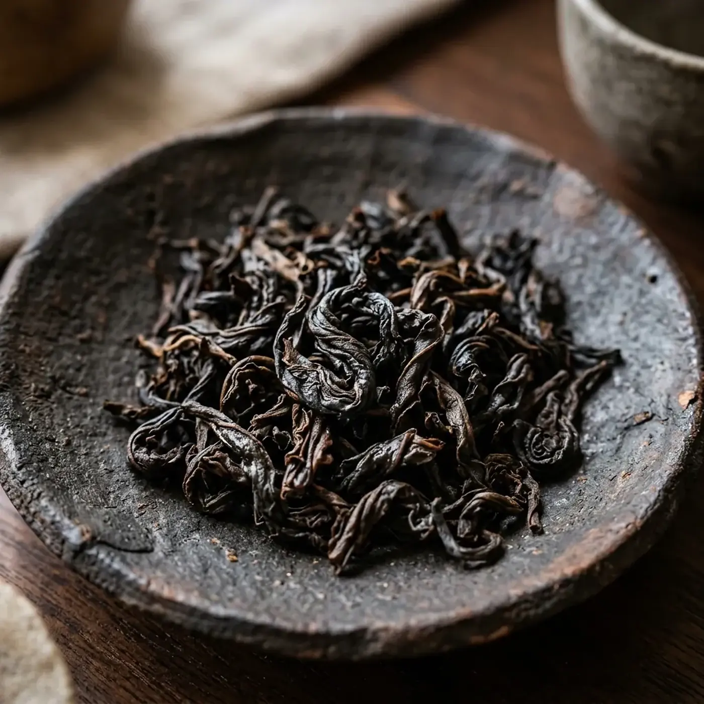
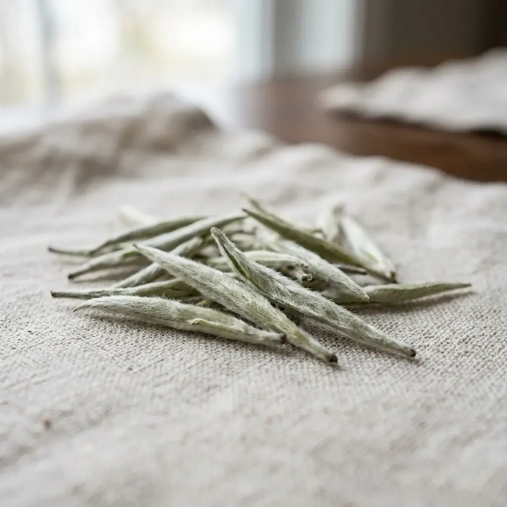
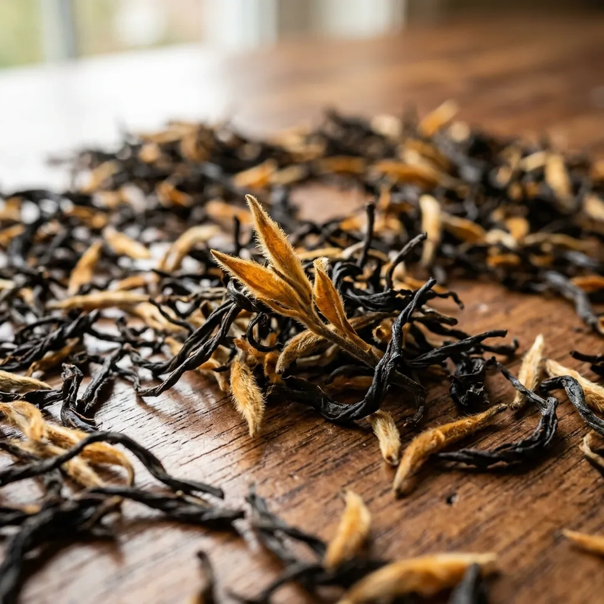
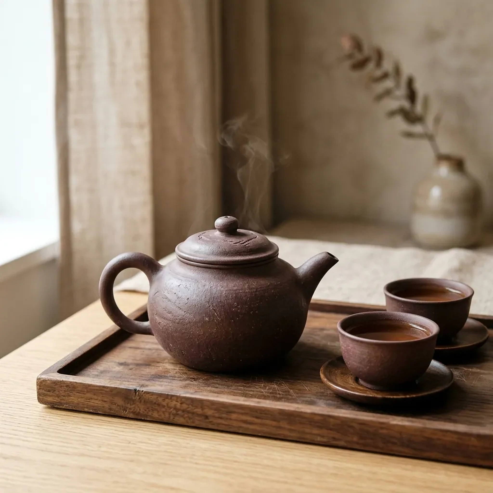

Свіже листя, світла терпкість, солодкий післясмак. У пізньому проливі смак стає м’якшим і прозорішим.Мінеральна основа, обсмажений аромат, довга тепла нота. У пізньому проливі смак стає м’якшим і прозорішим.Тонкий квітковий аромат, м’якість і прохолодна солодкість. У пізньому проливі смак стає м’якшим і прозорішим.Мед, сухофрукти й чисте тепле завершення. У пізньому проливі смак стає м’якшим і прозорішим.
ВОДА90°C
ЧАС8 с
ЛИСТ5 г / 100 мл
12345
Половина чашки — це вода.
Однаковий лист може звучати пласко, різко або чисто залежно від мінералізації та температури. Почніть із м’якої питної води без виразного запаху.
ЗАПАХ
нейтральний до нагрівання
ТЕМПЕРАТУРА
85–95°C залежно від листа
КИП’ЯТІННЯ
не тримайте воду довго в бурлінні
КОРЕКЦІЯ
спочатку час, потім температура

Дивіться, як лист розгортається.
Цілісність не гарантує якості, але допомагає побачити матеріал: бруньки, зрілі листки, стебла, рівномірність скручування та сліди обсмаження.
До водисухий аромат і крихкість
Після першогоформа, колір і чистота аромату
Після п’ятогорівномірність розкриття
Картка партії важливіша за легенду.
Для кожного лота мають бути відомі регіон, сезон, тип обробки, дата пакування і людина, яка відповідає за відбір. Цей сайт — portfolio concept; наведені партії демонстраційні.
Регіон
не лише країна, а конкретна зона походження
Сезон
час збору та рік виробництва
Обробка
що відбувалося з листом після збору
Зберігання
умови до та після імпорту
Партія має паспорт, а не міф.
Перед реальною публікацією кожне поле потребує документів і контакту постачальника.
ЛОТDJ-26-014 / DEMO
РЕГІОНЮньнань · уточнити господарство
ЗБІРвесна 2026 · підтвердити дату
ОБРОБКАшен / пресування · специфікація потрібна
ВІДБІРсенсорний протокол · додати ім’я
СТАТУСпортфоліо-концепт · не для продажу
Чотири характери.
Почніть із того, що хочеться помічати в чашці.

МінеральністьДа Хун Пао

ТишаБай Хао Інь Чжень

ТеплоЦзінь Цзюнь Мей
Як виправити чашку, не змінюючи чай.
Міняйте один параметр за раз. Так наступний пролив стає спостереженням, а не випадковістю.
ЗАНАДТО ГІРКОСкоротіть час
Залиште температуру й кількість листа незмінними.
ЗАНАДТО ТОНКОДодайте 2–3 секунди
Не збільшуйте все одночасно.
АРОМАТ ЗАКРИТИЙПрогрійте посуд
Потім перевірте трохи гарячішу воду.
СМАК БРУДНИЙПеревірте воду й чайник
Сторонній запах часто приходить не з листа.
Сесія тримається на паузах.
00:00Прогріти
Посуд і вода входять у спільну температуру.
00:45Познайомитись
Вдихнути аромат сухого листа без оцінки.
01:30Злити повністю
Час зупиняється, коли вода залишила чайник.
03:00Повернутись
Порівняти післясмак перед наступним проливом.

Посуд не декорує сесію. Він змінює її.
Товщина стінки, форма носика, об’єм і теплоємність впливають на швидкість та контроль проливу. Для першого набору достатньо гайвані, чахая і двох піал.
простий контроль зливу
об’єм 90–120 мл
матеріал без стороннього запаху
Після сесії залиште посуд порожнім.
Вода й час роблять більше, ніж ароматизований засіб. Повністю висушіть чайник перед зберіганням.
Промитичистою теплою водою
Відкритикришку й дати парі вийти
Висушитиокремо, без закритої шафи
Перевіритиносик і сітку перед наступною сесією
Чай пам’ятає повітря навколо.
Сухо
Без пари, холодильника та різких перепадів.
Темно
Подалі від прямого сонця й нагрітих полиць.
Окремо
Не поруч із кавою, спеціями чи пахощами.
Підписано
Чай, партія, дата відкриття й спосіб зберігання.
Питання перед першою сесією.
Без універсального «найкращого чаю» та без лікувальних обіцянок.
Чи потрібно промивати чай?
Залежить від типу листа, форми й особистого підходу. Для пресованого чаю коротке ополіскування може допомогти розкрити лист.
Чи обов’язкова спеціальна вода?
Ні. Почніть із приємної питної води без виразного запаху й порівнюйте, змінюючи лише один параметр.
Скільки проливів «правильно»?
Поки смак залишається цікавим і чистим. П’ять у демо — навчальна рамка, не стандарт якості.
Чи можна очікувати оздоровчий ефект?
Цей концепт не робить wellness або медичних обіцянок. Вибір будується на смаку, походженні та способі приготування.
Запитайте не «що найкраще», а що зараз є в партії.